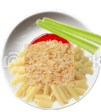

A crisp, flavourful and easy meal that will always leave an impression on company!
- 1000g of any raw hollow pasta
- 6 handfuls of chopped garlic
- The water left after rinsing one can of tomato paste (discard paste)
- 2 handfuls of seasonal local leaves
- 8 stalks of celery
- Add miscellaneous leaves to a pot with the tomato paste rinse water (1 full can)
- Bring to a boil, then remove the leaves by hand
- Divide the liquid among your serving plates
- Place dry paste on each plate, and set aside overnight to soak in the liquid
- Top with 1 - 1.5 handfuls of raw chopped garlic, and garnish with at least two celery stalks
- Serve and enjoy!
Note: for a quicker and crunchier preparation, the soaking in step 4 can be skipped